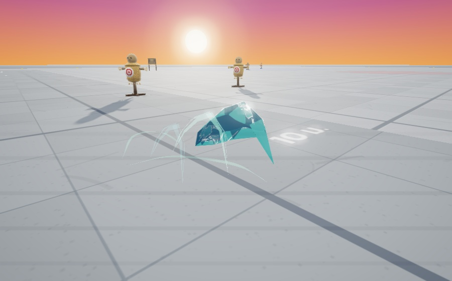

Wind BA · เทียบ 2 รูปทรง
ด้านบนซูมดูรายละเอียดคนละระดับ · ด้านล่างใช้กล้องและขนาดจริงเท่ากัน
A · บูมเมอแรงลม
แนวนอน · สันโค้งด้านหน้าพุ่งนำ · ตัวใบกว้างประมาณ 2.64 ม.

B · ใบมีดลมเล็ก
เสี้ยวโค้งสั้นเรียว · ทรงไม่สมมาตร · ตัวใบกว้างประมาณ 0.96 ม.

ตอนพุ่ง — ขนาดจริงข้างตัวละคร


ภาพจาก renderer จริงของ VFX Studio · ทั้งสองแบบใช้สีลมซ้อนชั้น คมสว่าง และริ้วอากาศตามทรง